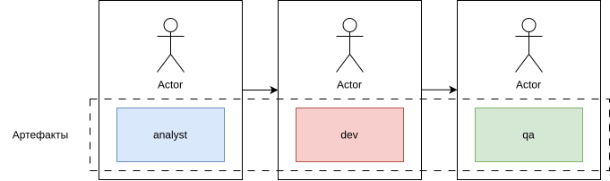
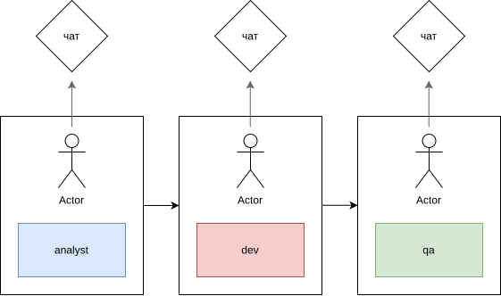
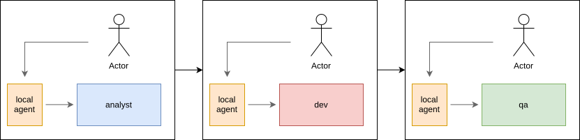
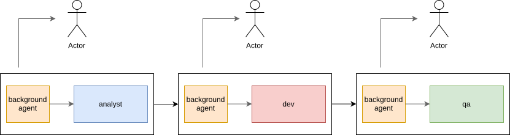
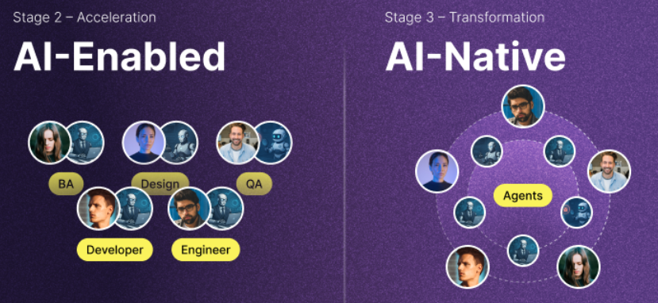
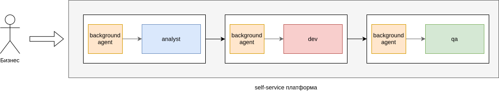

Уровни зрелости AI в SDLC 2026
Уровни зрелости
AI в SDLC
Поддубный Иван
CTO Вебпрактик
Кто я
- 15+ лет в IT. Прошёл путь fullstack → teamlead → CTO
- CTO в Вебпрактик (150+)
- Программный комитет: TechLead Conf, CTO Conf, Podlodka Crew, ПыхКонф
- Организатор Ростовского PHP-сообщества (~500 человек)
- Активно трансформирую процессы SDLC у себя в компании
Ландшафт сегодня
😴
Только на старте
Чат, copy-paste,
нет системы
🚀
Уже в космосе
Агенты, облако, высокая автономность без HITL
Сильная неоднородность
Как вообще понять, где ты находишься?
Проблематика
- Большая неоднородность ландшафта. Лидеры отрываются еще сильнее, некоторые еще не начинали.
- Сильно разные способы решения одних и тех же проблем
- Много информационного шума, из которого сложно более уверенно строить архитектурную и организационную стратегию
Доклад — попытка задать систему ориентиров
- Понять, где ты сейчас
- Увидеть, что вообще возможно — и есть ли смысл двигаться дальше
- Принимать осознанные архитектурные и организационные решения
Матрица зрелости AI в SDLC 2026
Модель зрелости можно строить по разным осям
- Gartner AI Maturity Model
- Stanford AI adoption Model
- Модель процессной и инженерной зрелости
Gartner AI Maturity Model
- Awareness — знаем что AI существует
- Active — эксперименты, пилоты
- Operational — AI в продакшене
- Systemic — AI интегрирован в процессы
- Transformational — AI меняет бизнес-модель
*Фокус на бизнес-трансформации
Stanford AI Adoption Model
| Ур. |
Название |
Описание |
| L0 |
Без AI |
Инженеры пишут код самостоятельно, AI не используется |
| L1 |
Точечное использование |
Личная инициатива. AI локально, в кодовой базе не отражается |
| L2 |
Систематизированное |
Командный уровень. Промпты и правила версионируются |
| L3 |
Агентная поддержка |
AI выполняет задачи. Скрипты и агенты в репозитории |
| L4 |
Оркестрированная агентность |
AI управляет процессом. Пайплайны из нескольких AI |
Модель процессной и инженерной зрелости
- Основная ось: уровень автономности
- Ориентирована на процесс
- Сильно связана с инженерным уровнем
- Должна помогать осмысленно принимать архитектурные решения на каждом уровне
0 уровень: классический процесс без AI

1 уровень: чат как внешний помощник сотрудника

2 уровень: локальные агенты

2 уровень: локальные агенты AI-ASSISTED
- Claude Code, Codex
- Метафора: усиливаем роли, давая экзоскелет
- Человек отвечает за результат под ключ
3 уровень: ai-native, agent-first, background-agents, cloud runtime

3 уровень: ai-native, agent-first, background-agents, cloud runtime
- Ключевое: какие-то блоки или все задачи уже могут решаться без участия человека.
- В остальных случаях Human-in-the-loop. Человек по требованию.
- Fallback на 2 уровень на сложных кейсах, когда агент не справляется
- Автономность этого уровня может достигаться только в облаке, когда ты можешь отключать роль, не зависеть от человека и его локального ноутбука.
- Поток не ограничен локальным рантаймом локальной машины инженера. Запускай сотни решений задач, ограничение в точках ревью.
- Кейс: доклад на podlodka crew, коллеги за полгода ещё в конце 2025 года делали 70% задач на background-агентах, 30% — fallback на 2 уровень
Epam 2 & 3 levels

4 уровень: полная автономность, e2e решение

4 уровень: полная автономность, e2e решение
- Метафора: темная фабрика
- Некоторые компании говорят о том что этого достигли, но в массе это скорее ориентир, чем частый кейс
Стратегическое решение 2 и 3 уровень.
& or vs
Можно ли остановиться на 2-м уровне?
- Да, на 2-м уровне (локальные агенты) можно дойти до высокого уровня автономности
- Но есть потолок: фабрика не сможет работать сама. Нужен ноутбук инженера, который её будет запускать руками.
2 (локальные агенты) и 3 (cloud агенты): развиваем параллельно
- В подавляющем большинстве мы сейчас развиваем 2 уровень
- 3 уровень можно развивать параллельно, вынося часть операций в облако.
- Но именно сейчас есть инструменты, которые прибивают вас гвоздями к 2 уровню, при принятии цели в 3 уровень их нужно избегать
- В идеале мы должны выбирать инструменты, которые будут работать на обоих уровнях, иметь fallback
Можно ли перепрыгнуть?
- В большинстве случаев нет, слишком высокие риски
- Отсутствие навыка работы с агентами у ролей
- Не так просто довести 100% задач, самые сложные проще решить через fallback
Типовая ошибка внедрения AI
- Внедрять агентов 2/3 уровня в каждую роль без синхронизации
- Чревато дублирующими и мешающими для объединения решениями
- Наш опыт проектирования
Правильное решение: СКВОЗНОЙ(!!!) SDD
- Берем готовый sdd фреймворк (например, openspec) или (зачем-то) пишем свой
- Настраиваем на свои процессы (он гибок!)
- Аналитик генерирует спеку агентом
- Разработчик генерирует ADR/plan агентом
- Разработчик запускает apply агентом
- Разработчик/тестировщик генерирует тесты
- Все в одном общем флоу с общим контекстом!
Правильное решение: СКВОЗНОЙ(!!!) SDD
Идем на доклад Дмитрия Галкина про то, как ребята внедрили SDD в Сбере.
Сквозной SDD помогает и для 2 уровня и облегчает переход в 3 уровень
Sandboxing
- Мы должны уметь поднимать полноценные динамичные окружения под агента
- Те, у кого это было, — в выигрыше, часть пути у них уже сделана
- Закрываем сеть от внешних обращений, только white list
- Read-only критичных файлов и директорий
- Выдача динамических секретов
Quality gates перед merge
- Полный тест-сьют зелёный (включая интеграционные, возможно селективные e2e)
- Linter / formatter / type-check
- LLM-judge: соответствует ли патч исходной задаче, нет ли лишних изменений
- Security scan (SAST, secrets, etc)
Action Policy, правила подключения HITL
База:
- Любой destructive op: drop/truncate, миграции на prod-схеме, force push, удаление файлов >N строк
- Установка новых зависимостей (особенно внешних)
- Изменения в security-чувствительных файлах: auth-модули, миграции, .github/workflows, Dockerfile, package.json
Evals: покрываем автотестами ai агентов
- Создаем датасет ваших типовых "золотых" задач и их решений
- Если был до этого openspec SDD, задача упрощается: на вход подаем change
- Измеряем качество и регрессы
- Смена системных промптов, харнеса
- Смена модели
Resource & cost limits
- Лимиты на токены/задачу на агента
- Защита по таймауту на долгий run
Observability
Полный трейс каждого run в LangFuse: промпт каждого шага, tool call, результат, итоговый артефакт.
Multi-agent coordination
Два агента, работающие в одном репо параллельно, должны видеть друг друга (lock на ветку/задачу), иначе будут гонки и переписывание чужих изменений.
Кодовые агенты
- OpenCode обещает выпустить удобный SDK в т.ч. для этого уровня
- Завязываться на Anthropic SDK, конечно, не хочется
- OpenHands: логика вшита в дизайн, но python
- Кастомная обертка запускающая любого кодового агента
Платформа
- Gitlab duo пытается сделать ее часть (только Enterprise Edition)
- Возможно когда-нибудь SourceCraft, GitVerse закроют часть пути, но я не сильно надеюсь
- Большинству из нас придётся её создавать самим
Пять уровней: от чата до автономности
| Ур. |
Название |
Суть |
Ось автономности |
| L0 |
Без AI |
Команда работает без AI-инструментов |
— |
| L1 |
Чат |
ChatGPT / Claude web, copy-paste, нет связи с кодом |
▪ |
| L2 |
Локальный агент |
Агент в IDE/терминале, активная сессия, HITL на каждом шаге |
▪▪ |
| L3 |
Облачный runtime |
Background-агент, sandbox, evals, HITL только на PR |
▪▪▪ |
| L4 |
Полная автономность |
Агенты инициируют сами, работают между системами, оркестрация |
▪▪▪▪ |
Главная ось — автономность. Пересекается с инфраструктурным слоем.
Выводы
- Стратегически определите, собираетесь ли идти в L2+
- Если горизонт — L3/L4, решения сегодня определяют: эволюция или переписывание
- Внедряйте AI в SDLC сквозным образом, не пускайте на самотек в разных цехах
Пожалуйста, оставьте
свой отзыв!
Поддубный Иван
CTO Вебпрактик